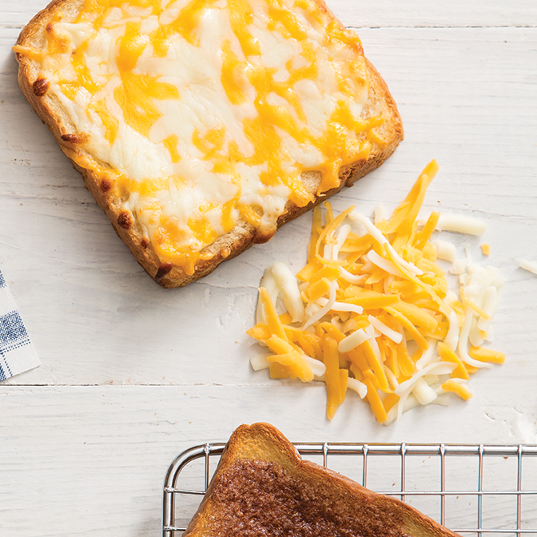

The Best Cheese Toast!

Description
Toast but taken to the next level.
Ingredients
- 2 pieces of bread
- 1tbs butter, softened
- 1/4 cup shredded sharp cheddar
- 1/4 cup shredded pepper jack
Instructions
- Preheat oven to 375
- Spread butter on each slice of bread
- Sprinkle both perpper jack and sharp cheddar on bread
- Bake for 8 to 10 minutes, or until cheese is melted and edges are golden brown
- Enjoy!